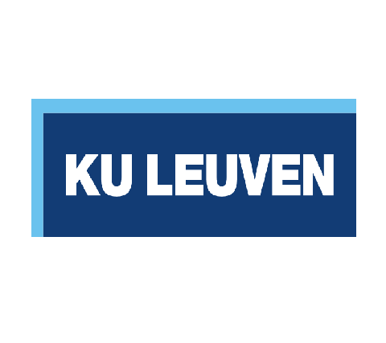

Belgium Research Network for Network Science
The Belgium Research Network for Network Science is an alliance of
innovative and forward-thinking research teams in Belgium committed to advancing knowledge
across various scientific fields using network science.
The network is dedicated to creating a virtual centre of excellence for network science research in Belgium.
We aim to achieve this by establishing a core group of network researchers who will act as a magnet, attracting talented
scientists and propelling network science forward. Through our focus on research and its practical applications,
the network strives to deliver scientific, societal, and economic benefits to the people of Flanders and the broader Benelux region.
To achieve that, the core group established an online presence with a webpage, and will organise annual scientific meetings
and doctoral summer schools, to facilitate scientific collaborations between partners via research visits and seminars.
Freely subscribe to our mailing list. Send a blank email to "listserv@lists.ugent.be" with the subject "subscribe benet YourFirstName YourFamilyName"


Our Members
Meet the diverse group of research teams shaping the future of
interdisciplinary collaboration on Network Science in Belgium. Below are our partners, each contributing unique expertise.

Complex Systems Institute
CSI is an interdepartmental research group studying critical events in complex social and economic systems. Our international interdisciplinary team uses data and network sciences, statistical physics, and computational modelling to study nature from a systems perspective. We design novel network models and algorithms and work closely with applied researchers (including businesses and public organisations) to tackle complex problems of societal and economic importance, such as investment strategies, crime, and opinion polarisation.
Learn More

Marinazzo Group
The group investigates methodological and computational aspects of research in neuroscience, where concepts such as networks
and connectivity have become prominent. The lab has a diverse and interdisciplinary background, and is involved in several
collaborations with experimental and theoretical groups in Flanders and abroad. This group assure complementarity in the development of methods in complexity and network science,
and their application to neuroscience and psychology.
Learn More

Augmented Intelligence for Data Analytics (AIDA) Lab
The AIDA Lab can contribute on two specific fronts for network science. First, its work on novel visual design will allow for exploring
more complex networks (including multi-layer networks and dynamic networks) for hypothesis generation. Second, its expertise in
topological data analysis will enable the extraction of meaningful structural patterns and features from large-scale, high-dimensional
network data.
Learn More

BionamiX
BionamiX has much expertise for what concerns setting up spatially explicit models and investigating how the dynamics of these
models depends on, for instance, the initial conditions and model design choices. Often such models are defined on networks and
hence it becomes crucial to understand the interaction between the network topology and the dynamics of the model defined on it.
Learn More
Quantitative and spatial criminology research group
This group quantitatively studies the spatial and temporal aspects of crime and crime control, with a particular focus on the role of a
variety of networks in crime and responses to crime. This includes the role of network structure in the transmission of crime and
victimization through co-offending networks and police networks, how serial co-offending networks dynamically evolve in space and
time, the role of road network structure in the generation of crime patterns in space and time, etc. The focus is strongly on the
application of network science to better understand crime and crime control.
Learn More
Systems and networks
This research pole deals with the concept of stability and robustness in various fields of research, aiming to identify its key structural
determinants. In ecology as in financial networks, catastrophic changes in the overall state of a system can ultimately derive from
how it is organized — from feedback mechanisms within it, and from linkages that are latent and often unrecognized. The change
may be initiated by external factors but is more usually triggered endogenously.
Learn More
Group for research on Ethnic Relations, Migration and Equality (GERME)
While globally focused on migration, multiculturalism and integration, some members of the groups employ social network analysis
and other computational social science methods in their research.
Learn More
CORE/LIDAM
We study the formation of social and economic networks in the presence of heterogeneous agents regarding their degree of
farsightedness. This is a promising research field and could help policy makers in order to target the role of some individuals into the
network. Once we assume that individuals could be heterogeneous, homophily and segregation could be observed in social
networks. We intend to investigate how the interaction between closely related markets affects homophily and the corresponding
segregation, characteristics of the network that affect the level of welfare and of inequalities in the society.
Learn More
Upcoming Events
Explore upcoming conferences, workshops, and seminars hosted by
the consortium.
Scientific Events
TBC 2025
11th edition of the Belgian Network Research Meeting
Annual Meeting at UGent. TBC.
View Details
Past Events
28 Oct 2021
10th edition of the Belgian Network Research Meeting
Annual Meeting at UNamur.
View Recap
12 Nov 2020
9th edition of the Belgian Network Research Meeting
Annual Meeting at UGent.
View Recap
22 Feb 2019
8th edition of the Belgian Network Research Meeting
Annual Meeting at UHasselt.
View Recap
6 Dec 2017
7th edition of the Belgian Network Research Meeting
Annual Meeting at UGent.
View Recap
15 Dec 2016
6th edition of the Belgian Network Research Meeting
Annual Meeting at UGent.
View Recap
30 Sep 2015
5th edition of the Belgian Network Research Meeting
Annual Meeting at UCLouvain.
View Recap
30 Sep 2015
5th edition of the Belgian Network Research Meeting
Annual Meeting at UNamur.
View Recap
XX 2014
4th edition of the Belgian Network Research Meeting
Annual Meeting at ULB.
View Recap
XX 2013
3rd edition of the Belgian Network Research Meeting
Annual Meeting at KULeuven.
View Recap
XX 2012
2nd edition of the Belgian Network Research Meeting
Annual Meeting at UAntwerpen.
View Recap
XX 2011
1st edition of the Belgian Network Research Meeting
Annual Meeting at VUB.
View Recap
Recent Publications
Discover the latest research findings, peer-reviewed articles,
and collaborative publications from our members.
Advanced Networks for....
J. XXX, A. XXX, & W. XXX
Journal of XXX, 2025
Download PDF